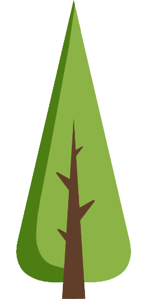

Nasza oferta

Drzewka bożonarodzeniowe
Jodła kaukaska 0.8 - 2.5m
Abies nordmanniana
Świerk srebrny 0.8 - 2.5m
Picea pungens

Nasze gospodarstwo od 1995 roku zajmuje się uprawą drzew i krzewów ozdobnych
z przeznaczeniem na choinki bożonarodzeniowe oraz sadzonki
Naszym priorytetem jest produkcja roślin najwyżeszj jakośći !
Sprzedaż detaliczną drzewek bożonarodzeniowych prowadzimy bezpośrednio na plantacji w okresie przedświątecznym. Zamówienia hurtowe przyjmujemy od 1 sierpnia. Choinki oferowane są jako cięte lub wykopane z bryłą korzeniową i zapakowane w pojemniki. Wszystkie rośliny pakujemy w siatkę ochronną